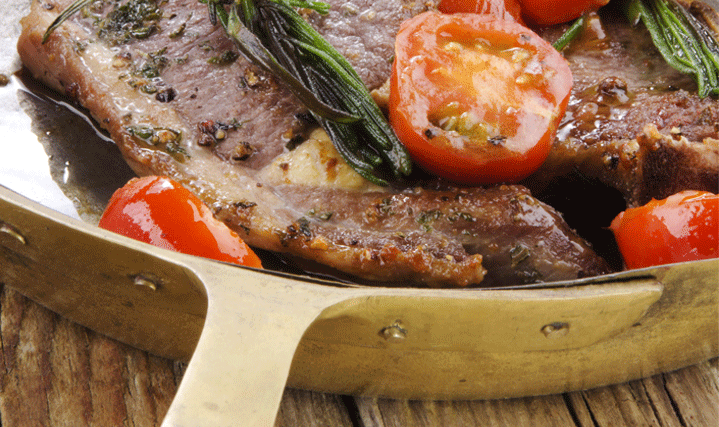
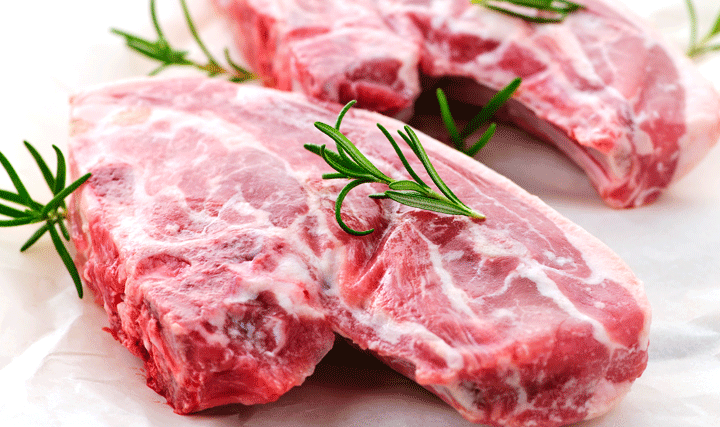
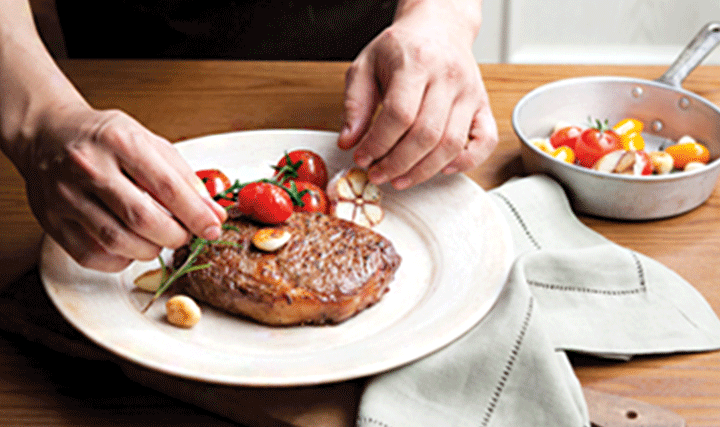
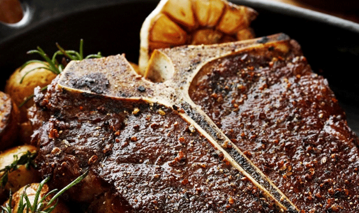

-
브로일링은 물론 팬 프라잉 및 얌 스톤까지 다양한 조리방식으로 즐기실 수 있습니다.
 -
풍부한 육즙과 우수한 마블링을 경험하실 수 있습니다.
 -
바로 준비해드리기 때문에 풍미가 더욱 좋습니다.
 -
포터하우스 등 차별화된 스테이크를 맛 보실 수 있습니다.

-
좋아하는 육류의 부위나 본인이 선호하는 식감을 먼저 선택하세요.
(부드러운 맛, 담백한 맛, 쫄깃한 맛 등) -
본인에게 맞는 굽기 정도를 정합니다.
고기굽는 정도 안내표 레어
Rare표면만 구워, 속은 거의 익지 않은 붉은 상태 미디움 레어
Medium Rare중심부가 붉고 따뜻하며, 육즙이 가장 풍부한 상태 미디움
Medium중심부가 핑크로 씹는 맛과 부드러움을 즐길 수 있는 상태 미디움 웰던
Medium Well Done약간의 부드러움과 육즙이 있고, 씹는 맛이 강한 상태 웰던
Well Done완전히 구워진 상태로 육즙이 미미하고, 씹는 맛이 강한 상태 -
스테이크를 즐길 때 소스는 다 뿌리지 말고 별도로 찍어드시거나 조금씩 뿌려가며 드시는게 좋아요!
-
스테이크는 구운 후 바로 썰게 되면 육즙이 다 흘러나와버려 맛이 떨어집니다. 1~2분간 그대로 두어 육즙이 고기 전체에 골고루 퍼진 후 맛있게 썰어 드세요~